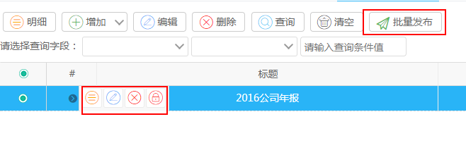
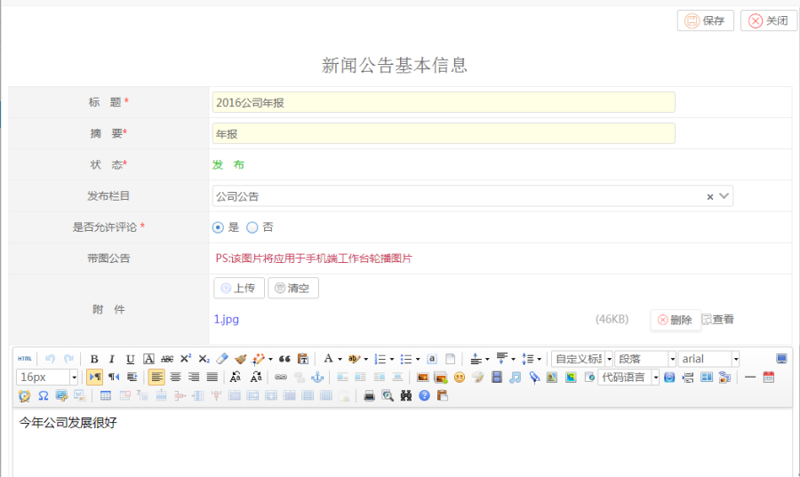
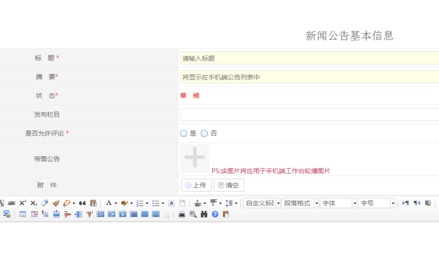
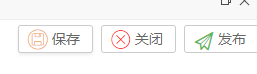
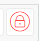
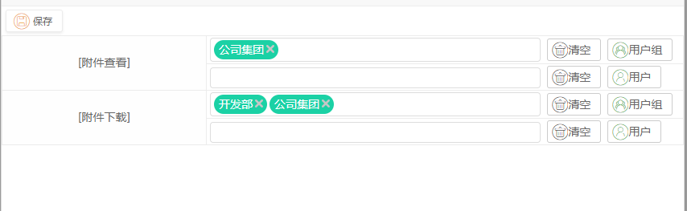

功能说明
新闻公告管理用于管理新闻公告的增删查改和发布功能。

【批量发布】：用于多个新闻公告的发布
【权限管理】：用于管理新闻公告里的附件权限
操作步骤
点击【编辑】或者【增加】按钮
 
【状态】：在未发布之前是草稿状态，发布到栏目后为发布状态，草稿状态是右上角按钮栏会有发布按钮 。
【发布栏目】：选择该新闻要在哪个新闻公告类型的栏目中显示
【是否允许评论】：是否允许用户在新闻下面评论回复
【带图公告】：用于手机端工作台轮播图片
【附件】：该新闻的附件
点击【附件权限按钮】 ，可以编辑该新闻公告附件的查看和下载权限。